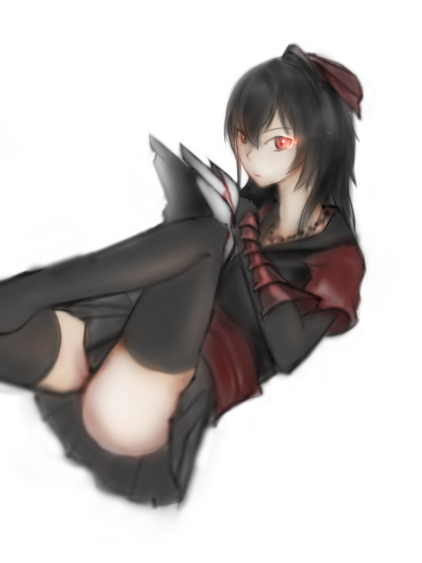
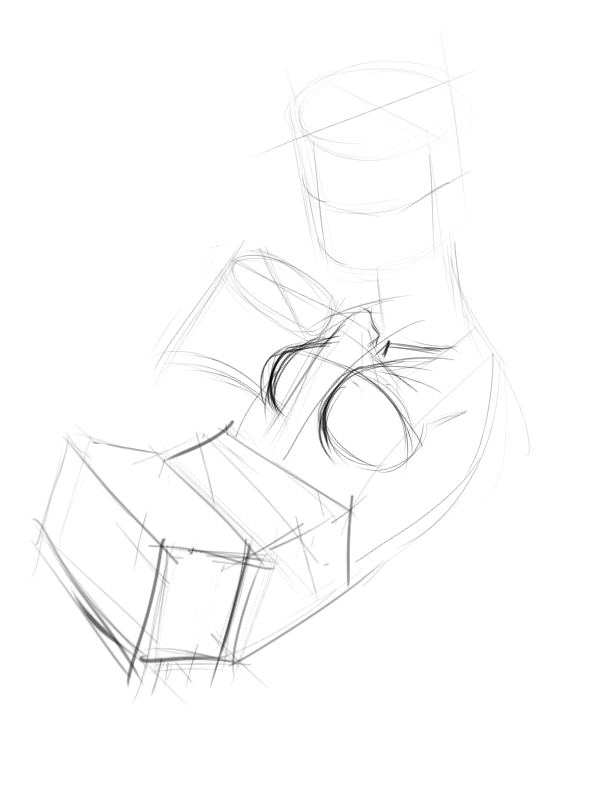

<div id="article_content" class="text-paragraph article_container">開始放寒假啦!<div>這畫圖的手感都不一樣了</div><div>所以就試試看用主要用噴槍來畫圖</div><div><br></div><div>角色是RWBY的Raven</div><div>雖然是媽媽，但想畫的姊氣一些</div><div>就當作是年輕的Raven吧(*ﾟ∀ﾟ*)</div><div><br></div><div></div><div><div>原作那個不太像是大腿襪，</div><div>不過，</div><div>管他的(́◉◞౪◟◉‵)</div><div><br></div></div><div>本來想類似練習的放在同一篇</div><div>還是分開放好惹，</div><div>假裝更新很多</div><div><br></div><div>放個過程</div><div><br></div><div>先畫一些方塊</div><div>加一些細節</div><div>就完成啦!(ﾟ∀。)</div><div>(第一次畫這種，沒想到要記過程)</div><div><br></div><div>認真(咳咳</div><div><div>先用噴槍打出灰階稿，</div><div>再覆蓋上彩色</div><div>沒想到一天不到就可以結束，</div><div>速塗可以考慮</div></div><div><br></div><div><div>想追蹤比較多日常還請走:<a href="https://www.facebook.com/Bushyeyebrowscat/" target="_blank"><font color="#FF0000"><font color="#FF0000">專頁</font></font></a></div><div><a href="https://www.facebook.com/Bushyeyebrowscat/" target="_blank"><font color="#FF0000"><font color="#FF0000">帽捲maochinn-繪圖坊</font></font></a></div><div><br></div><div><a href="https://www.pixiv.net/member.php?id=6856401" target="_blank"><font color="#FF0000"><font color="#FF0000">P站</font></font></a></div><div><font color="#FF0000"><a href="https://www.pixiv.net/member_illust.php?mode=medium&illust_id=66924633" target="_blank">給讚</a></font></div></div><div><br></div><script>
$('article.c-text img').load(function () {
// 表格內圖片大於表格寬時，設為 100%
if ($(this).parents('table').length != 0) {
if ($(this).width() >= $(this).parents('td').width()) {
$(this).width('100%');
} else {
$(this).width($(this).width() + 'px');
}
}
});
</script></div>